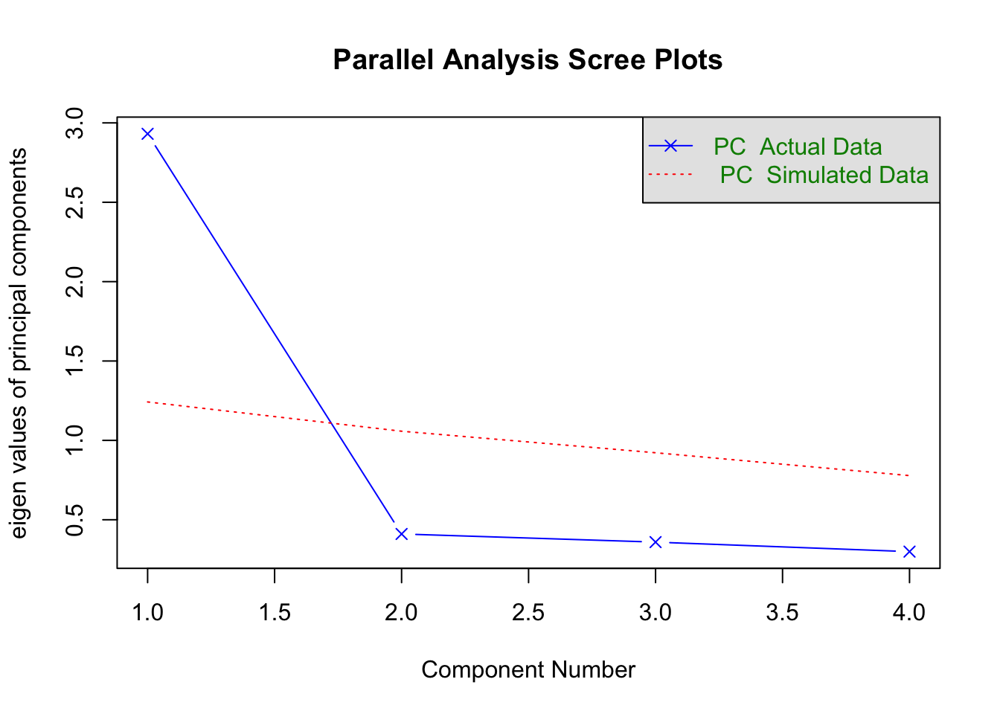
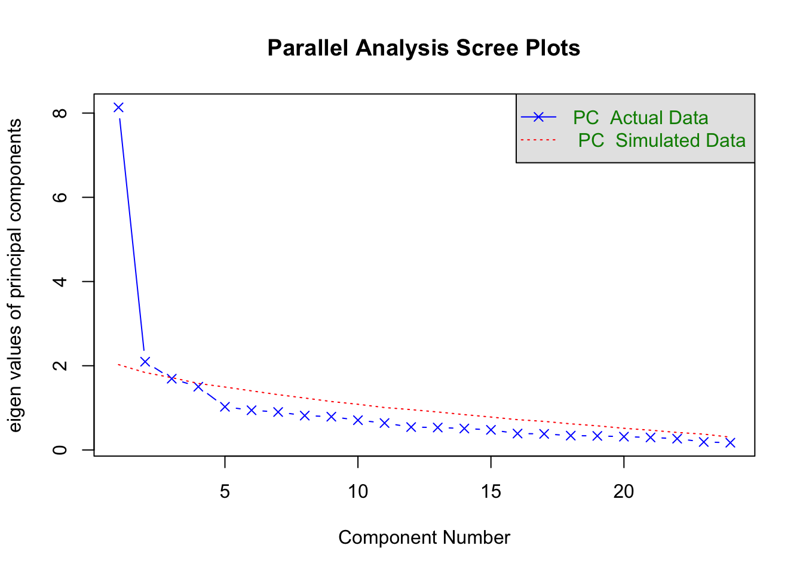

Chapter 2 Factor Analysis
2.1 Think about these situations
What do you do when you have a large number of variables you are considering as predictors of a dependent variable?
- Often, subsets of these variables are measuring the same, or very similar things.
- We might like to reduce the variables to a smaller number of predictors.
What if you are developing a measurement scale and have a large number of items you think measure the same construct
- You might want to see how strongly the items are related to the construct.
2.2 Solutions
Principal Components Analysis
- transforming the original variables into a new set of linear combinations (pricipal components).
Factor Analysis
- setting up a mathematical model to estimate the number or factors
2.3 Principal Components Analysis
- Concerned with explaining variance-covariance structure of a set of variables.
- PCA attempts to explain as much of the total variance among the observed variables as possible with a smaller number of components.
- Because the variables are standardized prior to analysis, the total amount of variance available is the number of variables.
- The goal is data reduction for subsequent analysis.
- Variables cause components.
- Components are not representative of any underlying theory.
2.4 Factor Analysis
- The goal is understanding underlying constructs.
- Uses a modified correlation matrix (reduced matrix)
- factors cause the variables.
- Factors represent theoretical constructs.
- Focuses on the common variance of the variables, and purges the unique variance.
2.5 Components
The principal components partition the total variance (the sum of the variances of the original variables) by finding the linear combination of the variables that account for the maximum amount of variance:
\[ PC1 = a_{11}x_1 + a_{12}x_2 ... a_{1p}x_p, \] This is repeated as many time as there are variables.
2.6 PC Extraction
draw pretty pictures on the board
2.7 Eigenvalues
Eigenvalues represent the variance in the variables explained by the success components.
2.8 Determining the Number of Factors
- Kaiser criterion: Retain only factors with eigenvalues > 1. (generally accurate)
- Scree plot: plot eigenvalues and drop factors after leveling off.
- Parallel analysis: compare observed eigenvalues to parallel set of data from randomly generated data. Retain factors in original if eigenvalue is greater than random eigenvalue.
- Factor meaningfulness is also very important to consider.
2.9 Example data
d1 d2 d3 d4
d1 1.00 0.70 0.65 0.62
d2 0.70 1.00 0.66 0.63
d3 0.65 0.66 1.00 0.60
d4 0.62 0.63 0.60 1.002.10 Kaiser
Retain factors with eigenvalues greater than 1
[1] 2.9311792 0.4103921 0.3592372 0.29919162.11 Scree Plot

2.12 Horn’s Parallel Analysis

Parallel analysis suggests that the number of factors = NA and the number of components = 1 2.13 Another example

Parallel analysis suggests that the number of factors = NA and the number of components = 2 2.14 Rotation
- Principal components are derived to maximize the variance accounted for (data reduction).
- Rotation is done to make the factors more interpretable (i.e. meaningful).
- Two major classes of rotation:
- Orthogonal - new factors are still uncorrelated, as were the initial factors.
- Oblique - new factors are allowed to be correlated.
Essentially reallocates the loadings. The first factor may not be the one accounting for the most variance.
2.15 Orthogonal Rotation
Quartimax - idea is to clean up the variables. Rotation done so each variable loads mainly on one factor. Problematic if there is a general factor on which most or all variables load on (think IQ).
Varimax - to clean up factors. So each factor has high correlation with a smaller number of variables, low correlation with the other variables. Generally makes interpretation easier.
2.16 Oblique Rotation
- Often correlated factors are more reasonable.
- Therefore, oblique rotation is often preferred.
- But interpretation is more complicated.
2.17 Factor Matrices
- Factor pattern matrix:
- includes pattern coefficients analogous to standardized partial regression coefficients.
- Indicated the unique importance of a factor to a variable, holding other factors constant.
- Factor structure matrix:
- includes structure coefficients which are simple correlations of the variables with the factors.
2.18 Which matrix should we interpret?
When orthogonal rotation is used interpret structural coefficients (but they are the same as pattern coefficients).
When oblique rotation is used pattern coefficients are preferred because they account for the correlation between the factors and they are parameters of the correlated factor model (which we will discuss next class).
2.19 Which variables should be used to interpret each factor?
- The idea is to use only those variables that have a strong association with the factor.
- Typical thresholds are |.30| or |.40|.
- Content knowledge is critical.
2.20 Examples
Let’s look at some examples
2.21 Steps in Factor Analysis
- Choose extraction method
- So far we’ve focused on PCA
- Determine the number of components/factors
- Kaiser method: eigenvalues > 1
- Scree plot: All components before leveling off
- Horn’s parallel analysis: components/factors greater than simulated values from random numbers
- Rotate Factors
- Orthogonal
- Oblique
- Interpret Components/Factors
2.22 Tom Swift’s Eletric Factor Analysis Factory
“Little Jiffy” method of factor analysis
- Extraction method : PCA
- Number of factors: eigenvalues > 1
- Rotation: orthogonal(varimax)
- Interpretation
2.23 Metal Boxes
2.24 Correlations
2.25 Eigenvalues > 1

2.26 Orthogonal Rotation
Loadings:
RC1 RC3 RC2
thick 0.212 0.947 -0.053
width 0.801 0.382 -0.011
length 0.936 -0.006 0.054
volume 0.634 0.744 -0.122
density -0.102 -0.060 0.930
weight 0.440 0.610 0.509
surface 0.792 0.600 -0.078
crosssec 0.942 0.287 -0.031
edge 0.892 0.422 -0.031
diagonal 0.905 0.327 -0.088
cost -0.023 -0.012 0.841
RC1 RC3 RC2
SS loadings 5.298 2.699 1.868
Proportion Var 0.482 0.245 0.170
Cumulative Var 0.482 0.727 0.8972.27 Orthogonal Rotation with Loadings > .70
Loadings:
RC1 RC3 RC2
thick 0.947
width 0.801
length 0.936
volume 0.744
density 0.930
weight
surface 0.792
crosssec 0.942
edge 0.892
diagonal 0.905
cost 0.841
RC1 RC3 RC2
SS loadings 5.298 2.699 1.868
Proportion Var 0.482 0.245 0.170
Cumulative Var 0.482 0.727 0.897